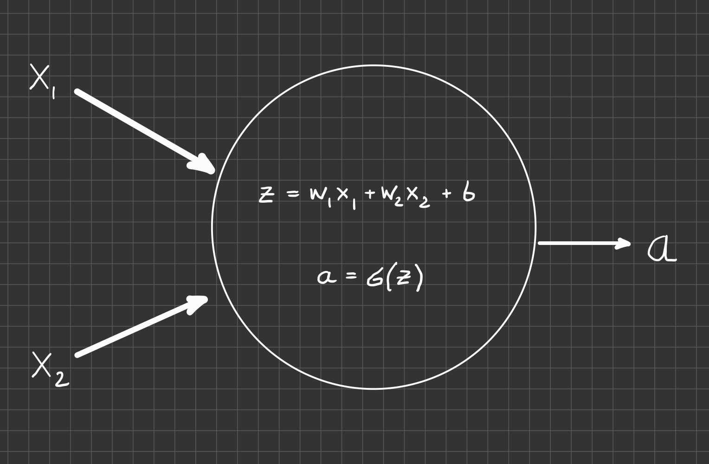
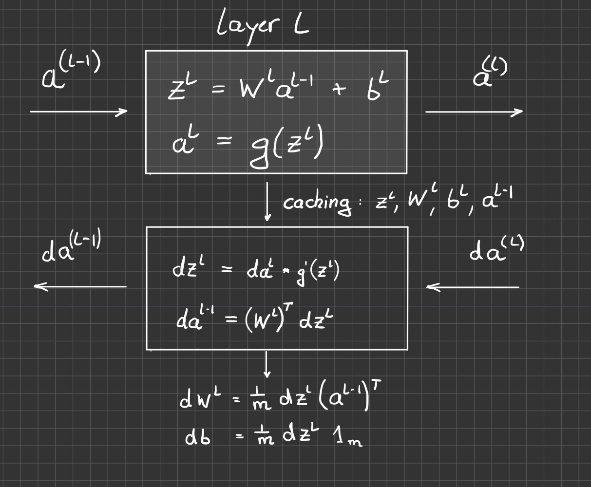
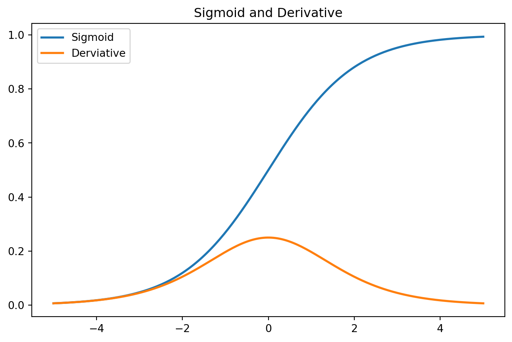

Code
import torch
import torch.nn.functional as F
import matplotlib.pyplot as plt
x = torch.linspace(-5, 5, steps=200)Find the gradients with respect to parameters. How much should paramters be changed to reduce the loss?

The network encodes a calculation that is applied to each sample

The loss function: \[ L(a,y) = -y \log(a) - (1-y)\log(1-a) \]
The derivatives can be calculates \[ \begin{aligned} \frac{\partial L}{\partial a} &= -\frac{y}{a} + \frac{1-y}{1-a}\\ \\ \frac{\partial L}{\partial z} &= \frac{\partial L}{\partial a}\frac{\partial a}{\partial z} = \frac{\partial L}{\partial a}a(1-a)\\ \\ \frac{\partial L}{\partial w_1} &= \frac{\partial L}{\partial z} \frac{\partial z}{\partial w_1} = \frac{\partial L}{\partial z} x_1\\\\ \frac{\partial L}{\partial w_2} &= \frac{\partial L}{\partial z} \frac{\partial z}{\partial w_2} = \frac{\partial L}{\partial z} x_2\\\\ \frac{\partial L}{\partial b} &= \frac{\partial L}{\partial z} \frac{\partial z}{\partial b} = \frac{\partial L}{\partial z} 1 \end{aligned} \]
\[ L = \frac{1}{N} \sum_i L(\hat y_i, y_i) \]

observed data: \(x\) true label: \(y\) predicted label probability: \(\hat y = f(x, \theta)\) \[ p(y|x) = \hat{y}^y (1-\hat{y})^y \to \mbox{maximize !} \]
Loss for one sample \(x\) \[ L(\hat y, y) = - \log p(y|x) = - y \log \hat y - (1-y) \log (1 - \hat y) \to \mbox{minimize !} \]
Loss for all \(N\) samples \((x_1,y_1), (x_2,y_2) \ldots (x_N, y_N)\)
\[ L(, x) = \frac{1}{N} \sum_i L(\hat y_i, y_i) \]
different initialization can lead to different (local) optima in non-convex landscapes
avoid vanishing/exploding gradients
Xavier Initialization (for tanh): \(Var(w) = 1/n\)
Kaiming Initialization (for ReLU); \(Var(w) = 2/n\)
Aim: introduce non-linearity
\[ \begin{aligned} z_1 & = W_1 \cdot x + b_1 \\ z_2 & = W_2 \cdot z_1 + b_2 \\ & = W_2 ( W_1 \cdot x + b_1) + b_2 \\ &= W^\prime x + b^\prime \end{aligned} \]
import torch
import torch.nn.functional as F
import matplotlib.pyplot as plt
x = torch.linspace(-5, 5, steps=200)\[ \begin{aligned} g(z) &= \frac{1}{1+\exp(-z)}\\ g'(z) &= g(z) (1 - g(z)) \end{aligned} \]
y_sigmoid = torch.sigmoid(x)
y_prime = y_sigmoid * ( 1 - y_sigmoid)
plt.figure(figsize=(8, 5))
plt.plot(x, y_sigmoid, label='Sigmoid', linewidth=2)
plt.plot(x, y_prime, label='Derviative', linewidth=2)
plt.title("Sigmoid and Derivative")
plt.legend()
plt.show()
saturation and vanishing gradients –> no learning
\[ \begin{aligned} g(z) &= \tanh(z)\\ g'(z) &= 1 - g(z)^2 \end{aligned} \]
y_tanh = torch.tanh(x)
y_prime = 1 - y_tanh**2
plt.figure(figsize=(8, 5))
plt.plot(x, y_tanh, label='tanh', linewidth=2)
plt.plot(x, y_prime, label='Derviative', linewidth=2)
plt.title("tanh and Derivative")
plt.legend()
plt.show()\[ \begin{aligned} g(z) &= \max(0,z)\\ g'(z) &= 0 \mbox{ for } z < 0 \\ &= 1 \mbox{ for } z \ge 0 \end{aligned} \]
y_relu = F.relu(x)
y_prime = (x > 0).float()
plt.figure(figsize=(8, 5))
plt.plot(x, y_relu, label='ReLU', linewidth=2)
plt.plot(x, y_prime, label='Derviative', linewidth=2)
plt.title("ReLU and Derivative")
plt.legend()
plt.show()\[ \log\sum_i e^{x_i} = x^\ast + \log \sum_i e^{x_i - x^\ast} \]
| Sigmoid | Tanh | ReLU | LeakyReLU | |
|---|---|---|---|---|
| Mathematical Range | (0, 1) | (-1, 1) | [0, ∞) | (-∞, ∞) |
| Advantages | • Smooth, interpretable as probability • Historically important |
• Zero-centered • Smooth transitions around 0 |
• Simple, fast computation • Sparse activations • No vanishing gradient for x>0 |
• Avoids dying ReLU problem • Retains advantages of ReLU |
| Disadvantages | • Vanishing gradient for large |x| • Not zero-centered • Saturation |
• Vanishing gradient for large |x| • More expensive than ReLU |
• Dying ReLU: neurons stuck at 0 • Unbounded outputs → exploding activations |
• Slightly more computation than ReLU • Still unbounded above • new hyperparameter |
| Typical Use Cases | • Binary classification output | • Recurrent networks • Some hidden layers |
• Default choice for deep nets’ hidden layers | • When ReLU causes dead neurons or sparse gradients |
| Activation Function | Typical Use | Advantages | Disadvantages |
|---|---|---|---|
| Sigmoid | Binary classification output (logistic regression); hidden units (rarely used now) | - Smooth output between 0 and 1 - Interpretable as probability |
- Vanishing gradients - Saturates at extremes - Not zero-centered |
| Tanh | Hidden units in older networks; similar to sigmoid but zero-centered | - Outputs between -1 and 1 - Zero-centered |
- Still suffers from vanishing gradients - Saturates for large inputs |
| ReLU | Default for hidden layers | - Computationally efficient - Avoids vanishing gradients for positive inputs - Sparse activations |
- “Dying ReLU” problem: neurons can output 0 permanently - Not zero-centered |
| Leaky ReLU | Hidden layers (especially when ReLU is too brittle) | - Fixes dying ReLU by allowing small gradient when input < 0 | - Slope for negative part is a hyperparameter - Still not zero-centered |
| Softmax | Output layer for multi-class classification | - Converts raw scores to probabilities - Highlights strongest class |
- Not useful for hidden layers - Sensitive to outliers - Can be numerically unstable (requires log-sum-exp trick) |
\[ \theta_{k+1} = \theta_k - \epsilon \nabla_\theta f(\theta_k) - \lambda \theta_k \]
\[ \theta_{k+1} = (1-\lambda) \theta_k - \alpha \nabla_\theta f(\theta_k) \]
looks equivalent to L2 norm (for GD), but not for Adam optimizer (momentum) ### data augmentation
\[ z = x. \theta^T \to E_{train}[z] = p E_{test}[z] \]

–> Andrew NG
When comparing model performance, compare data + data processing + optimization strategy + model